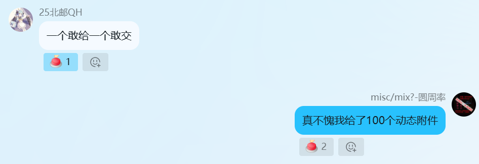
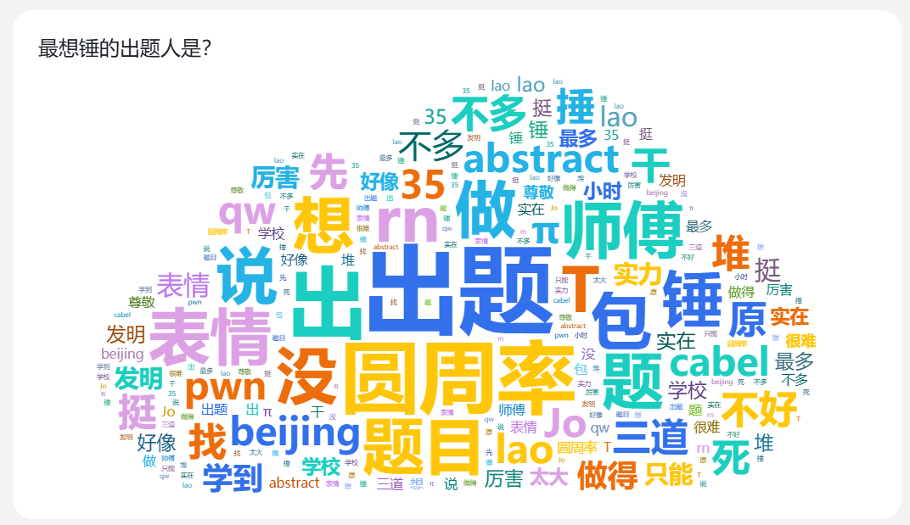

目前，TSCTF-J2026上圆周率所出的所有题目均已上线每咕一题，欢迎品尝！
一年一度的TSCTF-J就快要结束了，当初还在赛场上解题的我没想到转眼间就成为了出史人，看着大家比赛了。这次比赛，颇有收获，颇有感触……
“MiscEverythingUp”是我最先出的题，当时就是想出一道所有方向都包含的题目，看看能不能吸引各个方向的人去做其他方向的内容，所以每一部分的考点设置都比较简单；
随后，我确定了宣讲的主题《重生之我要成为旮旯给木大蛇》，所以就决定出一道与旮旯给木有关的题目，这就是“フラグの恋”；
做了些人造文字有关的题，因为实在没找到对照表，于是从猜测开始手推出了对照，觉得可以作为一道考题，就有了“文字的秘密”；
后来re需要一道花+OLLVM的迷宫题，我觉得我可以一试，于是就出了“MazeGarden”；
最后本来是在《人类对〈华强买瓜〉的开发程度还不到1%》时期决定出一道AI魔改视频的“华强买flag”，但是因为感觉视频生成AI有点贵，也不知道哪个模型比较好，所以一直拖到国庆，最后决定临时换题，考虑到大量的新生赛出了MC题，并且最近又在倒腾FPGA，我就想到可以设计一个红石电路来判题，这就是最后完成的红石逆向题“!?MisC?!”。
| 题目名称 | 类型 | 赛前难度预估 | 实际解数 |
|---|---|---|---|
| !?MisC?! | Misc | 3/10 | 6 |
| MiscEverythingUp | Misc+Re+Crypto+Web+Pwn | 3-6/10 | 2 |
| フラグの恋 | Misc+Re(?) | 5/10 | 8 |
| MazeGarden | Re | 5/10 | 9 |
| 文字的秘密 | Misc | 7/10 | 6 |
比赛开始后，先放出的是我认为偏难的フラグの恋和文字的秘密，フラグの恋于下午2点40分左右出现首解，而文字的秘密在晚上11点30左右出现首解，据说还是Agent梭出来的，能对图像题进行求解，这个AI的多模态确实给力；
第二天放出!?MisC?!、MiscEverythingUp和MazeGarden，虽然我觉得很难梭的红石逆向在开赛前就在内部测试被GPT 18分钟秒了，但是也撑了快1h才出现第一解，客串的RE撑了不到3h，也被攻下；
最后的全栈题虽然是全栈，但是每个方向的考点都很基础才对，最后撑了一天半才被解出，从提交记录来看，似乎是都被我原封不动copy到容器里的我的博客吸引火力，去读我的WP和解博客里面的题目了……
总体来说，我觉得解出我题目的“人”实在不算多，于是在比赛末尾放出了大量hint，有两位选手根据hint解出了文字的秘密，然而在看WP的时候才发现，似乎有选手没有看到hint，在此题遗憾离场……另外还有フラグの恋题依然卡在第一关的……What can I say……真的再提示都把答案糊脸上了……
比赛平稳进行到最后阶段， 非常值得称赞的是，本次比赛没有出现作弊现象 ，等一下，这个是什么……
.png)
……言出法随啊，刚写完没有作弊现象就出现串flag的了！拷打，拷打，必须拷打！
.png)
在此处强调，可以玩“神秘海鲜市场”的梗，但是 绝对不能上海鲜市场买卖flag！这是一个原则问题，没有讨论的余地！ 在此次审计事件中由于二者并未出现金钱交易，故没有进行特别通报，封禁双方队伍，取消一切评奖资格。

比赛结束，大家的反馈也陆续交到了我们手上，可以看得出来大家都认为此次比赛整体偏难，也普遍认可我们的题目质量。通过比赛，对Misc方向感兴趣的同学从13位涨到了20位，是所有方向中涨幅最大的，可见Misc方向的创新题吸引了不少同学，下面总结一下我的题目的好评/差评
| 题目名称 | 有趣/高质量 | 无趣/低质量 |
|---|---|---|
| 文字的秘密 | 3 | 1 |
| !?MisC?! | 2 | 0 |
| MiscEverythingUp | 2 | 0 |
| フラグの恋 | 2 | 1 |
| MazeGarden | 1 | 1 |
由此可见，大家对于我的题目还是比较认可的
另外还有一列想锤的出题人，这个嘛……

有些人没有写明想锤谁，估计是不知道出题人是谁，但是我在每一道自己出的题目里都有露脸，所以想锤我的都知道该锤谁（x
最后我在“最想锤的出题人”挑战中获得了4次（圆周率x3 + πx1）的好成绩，你也来试试吧！
玩笑归玩笑，但是我这次出题确实有一些出史嫌疑，给各位师傅滑跪了 orz
WP差不多集齐了，在 我的暴论 出题组的WP要求下，各位师傅交上来的WP总算比较规范了，下面，我将结合各位在WP中的思路分题目进行复盘，探讨更好的思路与解法，作为出题人WP的一个补充
フラグの恋
| 解出数 | WP提交数（成功/失败） |
|---|---|
| 8 | 9（5/4） |
フラグの恋出得实在是有些套娃了，主要是看到misc全考查创新题去了，所以就塞了一些misc基础进去，下面梳理一下：
首先是第一关，未解出的4人中有3人卡在了这一关（圆周率：何意味……）
首先，这里面3人有2人锤过我，我提示了“这是一个宣讲讲过的内容”，然后一个就去考虑ook和bf了，但这两个字符数明显不符合（3、6），即便是通过了这一关的5人，也有1人先想到的是哈基米和佛曰，气的我去翻了一下宣讲的录像，结果发现当时忘记强调兽音的特点是字母表含有4个字符，使用时只要找到四个字符的正确排列即可……好吧，我的我的 orz，最后的hint1就是这个意思，不过似乎提示到盲区了，没有人解出……
不过AI大人提出了不同的见解，解出的AI很大一部分都是手撕兽音的，其中提到兽音的特点为开头3字符与结尾字符构成字母表，顺序为421……3，于是我找到网站测试，发现确实如此


于是，即便你不知道“鸡你太美”为何方神圣，也可以通过这个规律找到正确的顺序
接下来就是enc文件，有不少选手是通过文件头找到软件的，非常好，符合我在宣讲时的解法，不过由于不会解密的人太多了，直接搜.enc文件解密其实也是可以找到的~
然后是lz4文件，这个没什么好说的
接下来是视频图种，这个是有一个工具生成的，藏得还算隐蔽，但是用法和图种一致，但是差了个密码，这里不少AI是通过弱口令爆破出来的，也不为是一种办法……但我的本意是通过盯帧发现二维码，忘记114514是弱口令了，可以?d?d?d?d?d?d爆破，rockyou里面也有（究竟是谁在用这么恶臭的密码啊 恼）……
解到的旮旯给木选手和AI倒是基本走了预期路线，解包魔改rpa，还原rpyc，然后发现一个奇怪的piz.yek
对了，这个不是基于现实改编的，这个是基于Ren’Py代码示例改编的

咳咳，回到正题，这个piz.yek看着就挺怪，稍加脑电波就发现这提示文件的字节是反转的，这里从文件末尾可以看出，这个是逐十六进制反转，接下来就是misc基础内容，考察零宽字符、压缩文件和图像变换
这几层文件的提示基本都在注释里，暗示非常明显，如“零宽字符”对应“就在这里你看不见吗”
下一层rockyou看似nonsense，但这其实是一个弱密码字典的名字，在CTF中非常常见，没认出来的同学记好笔记！
接下来是掩码爆破，提示中的验证码按常理就是六位数字，可以爆破，有选手一开始以为是和验证码生成有关，要说这个和验证码生成有什么关系嘛……这个确实是验证码（x

然后得到的二维码比较奇怪，但是AI基本都认出来了是极坐标变换，这里没有卡点，下面扩展一种变换，叫ZigZag，比较奇怪，二维码变成下面那样，要认得出来，去年考了几次

由此，扫到我们盒子的钥匙（有选手就心急交上去了）
还有一个target，不出所料AI都是手撕存档的，不过从WP上没有看到被我的加密逻辑阴到的具体情况，不知道实际上有没有卡住AI一段时间（即所谓“诅咒”）
不过AI似乎撕得不够彻底，如果直接手撕pickle，就可以看到有两个地方有glitch过的target迹象，一个是历史log（即点击history按钮显示的内容），另一个是回退历史（即向上滚轮回退的内容），一开始没有注意到后面的内容，所以测题的时候直接被AI捡漏拿到flag了（x
接下来就是解密盒子了，不出所料，AI大人逆向乱杀，没一个是不逆向解出来的，有些AI是直接全部逆出来，但是最后还是有一个不可逆的组件，只能通过枚举映射找到可能的原像，所以逻辑就变成将target恢复到这个组件，然后枚举输入组合，尝试找到原像，这里也是可以的，应该要比我的不逆向脚本快不少，但是逆向上需要花的精力我认为超出了它带来的收益，所以，手搓的同学不要学习，AI的同学多花点头肯！
这里还有一个选手选择让AI帮他hook住输入对象的方法，从而log出运算逻辑，做到不逆向的黑盒变白盒，这与TSCTF-J 2025的Python's Shed Skin的预期解法属于是异曲同工之妙，值得大家（特别是RE手）学习借鉴！（而且本题所有运算均通过CPython API实现，所以理论上可以log出所有逻辑，比那题简单不少）
小结一下，本题的卡点实在是让我没有想到，不过AI都能过说明那些选手还是在坚持古法思考的，这一点值得嘉奖，但是适当使用AI也可以增进我们的技术，就像前面提到的兽音加密的特点那样，还是让我从中学到了不少新姿势；另外出现hook方法逆向pyd的WP真的是我完全没有想到的，看到这份WP就让我想起了去年的招新赛，能用到这样的方法解题，与我的笨方法不知道好到哪里去了
!?MisC?!
| 解出数 | WP提交数（成功/失败） |
|---|---|
| 6 | 9（4/5） |
首先看一下提交上来的失败原因，5人中有2人是不熟悉红石电路，故草草开溜，可以理解；另外3人均使用AI解题，有2人明确指出，AI发现了最关键的232个拉杆，但很明显的是，AI没有观测其他红石电路，而是选择枚举各种可能性爆破flag，甚至一度导致平台禁止其提交flag，而选手也很明显没有进入过存档，否则不可能不提示AI将注意力从拉杆移开去寻思电路连接逻辑，另外1人没有明确AI进度，但大概率也是爱莫能助，只能看着AI燃烧token
提交上来的4位选手全部明确使用AI辅助解题，其中2位应该是一把梭出来了；另有1位让AI将电路转化为Verilog；最后1位选手可能大部分是手搓的，使用AI辅助读取目标数据，但是由于时间原因，未能对其展开描述
这里也回答一下这位选手的提问，我在本题中未使用AI设计/搭建该电路，最后写入结构时使用了手搓的脚本如下（当然，api用法参考了AI）：
1 | import random |
所以不同的附件会有不同的初始值、加数和flag
另外，两位一把梭的选手的AI是通过flag首字反推初始状态的，但是，其实初始状态被脚本写在由锁存模式中继器构成的寄存器上了，可以通过powered属性读取
一位选手选择了把自己不熟悉的红石电路让AI转换为Verilog，然后对其进行分析，将未知事物转换为已知事物，也是一种非常好用的方式
至于详细的解法分析，可以看看这道题的出题人WP，应当是写的还算详细了，这里不再过多赘述
文字的秘密
| 解出数 | WP提交数（成功/失败） |
|---|---|
| 6 | 7（4/3） |
依旧分析痛点，提交上来未能解出的3份WP中有1份为所有对应均为与其积累的已知对应匹配，故光速开溜；剩下的2位均卡在3.png，但其中一位可能没有看到我最后一点时间放出的付费hint，另一位购买了hint仍未解出；若不放出hint，成功的4位选手中有1位卡在3.png，另有1位卡在最后的secret.ttf
不过似乎很多选手觉得hint的密码是可以解出来的，但是我明明写了“正在加速破解中，完成后将会第一时间联系您”，是暗示这个是以后可能会放出的hint来着……
具体的解题过程就不说了，可以看出题人WP
下面讲一下几条基本思路：
首先是，遇到一个人造文字，我们看到要考虑是否存在已知映射，如本题的1.png和3.png，这里1.png仅有1人是直接使用的Runes文字的对照表（有可能还是AI看出来的），3.png由于实在无法推出来，几个检索能力强的AI倒是找到了中华语字的对照表……
其次，遇到不确定的也不用慌，如果是简单映射，可以从常见词（a、the等等）或主题词入手，逐步推到映射表，这里2.png的映射表是在互联网上找不到的，因为这是我随机挑出来的26个NerdFont打乱后形成的映射
对于3.png，如果没有检索到相关信息，就可以使用hint3，里面是声声慢与其人造文字表示，由此可以对照得到规则，注意。汉语拼音不是一个完整部分，而是由声母、韵母等元素组成的，所以对于提示，应当把每一个部分拆开分析，而不是整体映射
secret.ttf里面考察的是连字特性，如果购买的hint4，就会看到portal.html使用了特性功能，由此寻找GSUB表，就可以得到flag
这里有看见编程读取的，也有使用工具导出连字规则的，都是可行的方法，选择你喜欢的就好
MazeGarden
| 解出数 | WP提交数（成功/失败） |
|---|---|
| 9 | 6（6/0） |
这个没有失败的WP……而且6位选手全为AI一把梭（其中含有不想一把梭但最后被AI自作主张解出flag的选手1位）
就WP观察而言，花指令和平坦化对于AI真的和没有基本无差……What can I say……
对了，有一位选手反应D-810不好使的，这个可能是花没有去完（毕竟一共500多朵），去完后最好还要全部Undefine，再定义Function，让IDA重新分析一下这段汇编，D-810是完全可以去平坦化的
以及就是WP里似乎对于反调试的讲述很少……其实setup里面是有两条路的，根据isDebuggerPresent分为真和假，但是AI似乎一眼丁真鉴定为假就出了。
最后给各位的CPU道个歉，我不是故意的，平时没有养成处理输入异常的习惯，没有对返回-1的情况进行处理，而是让主循环持续空转，给大家滑跪，但是我真没想到AI会不给stdin运行，并且这样会满载空转啊QwQ
MiscEverythingUp
| 解出数 | WP提交数（成功/失败） |
|---|---|
| 2 | 2（2/0） |
这个题的痛点……我可以说是注意力涣散吗（？
在平台提交记录中有两位选手的AI都出现过将“每咕一题”的flag作为本题flag提交的情况……
最后交上来的两份WP大概率都是AI一把梭的，不过思路倒是写的挺清晰，下面对一些细节做解释：
首先是关于端口问题的，这个是由于比赛平台限制，题目最初为docker-compose，各个容器使用不同IP，然而比赛平台不支持docker-compose，各个容器使用同一个IP，且相互访问的方式为使用回环地址，所以为了尽可能不破坏选手体验感，这里将相同的port进行了一点点的移动，然后在两个SSRF点都进行了替换
1 | import socket |
本来以为对选手是无感的，但是忘记选手可以读内部容器的start.sh了，就出现了访问和实际端口不一样的情况，不过这个应该对于做题不是很有影响
关于登录的设置，我还是下了一番功夫防止非预期
首先是方式session复用，这里设置容器每次启动时的secret随机生成，这样过去的session就无效了；
其次是防止从流量包中解出密码，这里用了RSA，确保密码无法被反解出来；
然后是防止重放，在加密前拼接nonce，并且防止nonce复用，将nonce写入session，并且在内部简单维护一个nonce pool，将生成的nonce放入，使用后移除，如果nonce不在池中，则返回nonce is out of dated（其实应该用expired的，不知道我的英语怎么想的x）以防止nonce和session一起复用（如果在实际工程中，应该是使用时间作为nonce的一部分来确保过期后不可重放来着）
这样一来，这个算法就还算稳固了，至少两位AI大人均未发现非预期（还得是全栈来设计这些需要跨方向交叉分析的地方）
不过为了方便爆破，自定义的TOTP并未完全按照RFC标准，而是允许重复使用（按照标准，一个TOTP码应当只能使用一次，需要使用cache或其他服务记录已经使用过的TOTP避免重放）
没想到的是，z3对于这个TOTP secret的求解如此之快，估计内部也进行了差分约简吧，但是从运行速度上，肯定还是要比我们的手推解法慢的，至于为什么会有多解符合，详见出题人WP对其的分析
接下来是一些碎碎念：
本次比赛，Agent技术已经发展到了可谓炉火纯青之境界，现在的CTF比赛，倘若想不靠Agent而是手搓取得成绩，难矣！所以，如我这般排斥Agent而崇奉手搓，殆矣！想当初，我接触CTF纯粹是一个偶然：一个偶然了解到base64，一个偶然了解到与佛论禅，一个偶然看到有关安全的博客……但这就是我的来时路，自去年的暑假开始，我已经有了些许的CTF基础，由此开启moeCTF，正式步入CTF领域。一切都是那么的有趣，我一道接一道，一道解一道，遇到不会的，就去搜索相应的知识点……AK moe的那段时间，成就了我如今的90%也不为过，反而是入队以后，懈怠学习，各个方向都跟不上进度，所谓专精misc，掩饰罢了，实则实在力不从心……一直到去年将近寒假，TSCTF-J2026的出题被提上行程，我知道，检验我学习成果的时间到了：因为出题与解题不一样，解题只需要大概掌握知识点即可，而出题人要考虑的就多了，比如考点的具体考法、要不要变形、如何融入到题目当中、如何给出指引提示、非预期的防止等等，并且毕竟不能全出史题，考点肯定不能太偏又不能太正，而且要有一定的教育意义才好……处于此点，我没有主动给所有方向出题，而是打算尝试一下深耕自己的misc方向，仅仅应邀客串出了一道reverse，出的不是很好，但是我也在出题的过程中加深了对花指令的理解，以及学会了OLLVM（主要是控制流平坦化）的加入与去除，这些都是选手很难在比赛中获得的经验。虽说现在AI大人强的可怕，但是我还是尝试了能不能给AI使点绊子，但同时不伤及人类解题者，所以就有了图像、游戏的环节，这些在我印象里AI都不是很擅长（但是还是能梭的，可能是我的印象太陈旧了），这就是“文字的秘密”、“!?MisC?!”（以及被!?MisC?!取代的原定计划的“华强买flag”）出现的原因。不过最后还是好多一把梭的，而且有些脑回路还是出得太史了，人类解题者并没有我预期的那么多，还好最后“文字的秘密”放了点付费提示，有两位应当是人类解题者的选手购买后解出了本题，希望两位都没有在这道题留下遗憾吧！
我现在也很迷茫，我感觉周围人都上车了，而我没有，我不知是不愿试错，还是先前的刻板印象太深，还是觉得自己无法掌握AI，还是觉得自己解题有规矩不烧心 （烂梗扣钱！） ，总之我无从下手——在这个AI飞速发展、以蓬勃气势要将世间几乎一切推翻重来的时代，我将要被淘汰。上车吧！还不算晚！可这日子却又还过得，我将近年龄一半的码龄、我自初中以来训练出来的自学能力，让我在此苟且偷生，慢是慢了点，但是自己写的代码不烧心 （烂梗扣钱！x2） ，算了罢！这不还活着吗？
…………
比赛间有一个小插曲，当时榜一的大一新生找到我，问我5年后CTF中会不会没有人类了。我想，在这个科技日新月异的时代，Agent或是AI的更新形态的能力指数增长，那时可能已经可以完全替代安全人员的作用了，或许，在那之后，CTF将以一种更纯粹的形态回归吧……
通过本次新生赛，我从各位师傅和AI身上学习了很多，希望各位也是如此。师傅们，我们，明年见！
祝
身体健康，学业有成！
圆周率
2026年10月14日凌晨 写于雁南园